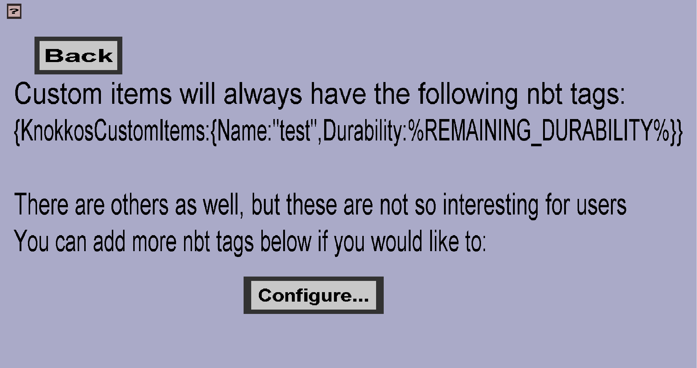

The item nbt menu can be used to configure the NBT tags of custom
items. If you haven't done anything yet, it should look like this:

Basic buttons
-
The 'Cancel' button will take you back to the item edit menu you
came from, without keeping any changes you made to the NBT.
-
The 'Apply' button will keep the changes you made to the item
NBT and then take you back to the item edit menu you came from.
-
The 'Add integer' button will add a new empty key-value pair of
type integer. After clicking this button, you should configure it
by clicking the new buttons and changing the values in the new
edit fields.
-
The 'Add string' button will add a new empty key-value pair of
type string (text). After clicking this button, you should
configure it by clicking the new buttons and changing the values
in the new edit fields.
-
Currently, only integer and string tags are supposed, but this
might change in the future.
Configuring entries
After you click on the 'Add integer' or 'Add string' button, the
following elements should appear:

-
The edit field on the left is to define the key of the nbt
pair/entry. Initially, it will have only 1 part, but you can add
more parts by clicking on the green + button. See the example a
bit below to see how these parts work. You can use the right arrow
key to scroll sidewards if you have many parts.
-
The edit field on the right is to define the value of the nbt
pair/entry. Unlike the key, this can only have 1 part. If you clicked
on the 'Add string' button, you can insert any string as value. If
you clicked on the 'Add integer' button, you can only insert integers
as value.
-
Clicking the red cross will remove its corresponding pair/entry.
To understand how the parts work, consider the configuration in the
following image:

If you use this configuration, the item nbt would get the following
NBT: {DummyTag: {hello: "creeper"}, KnokkosCustomItems: {
Name: "example_item", some other internal nbt stuff
}}
If you add multiple entries and these entries share their first part(s)
then will share their parent tag(s).